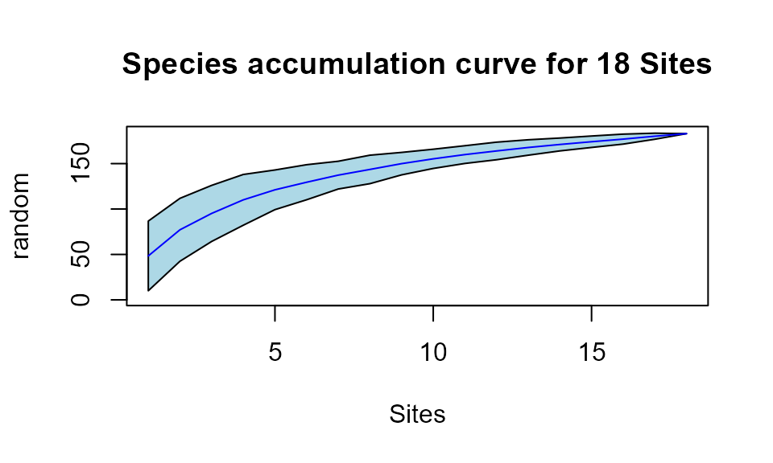

Creating a species composition matrix for further analysis
Create_Speccomm.Rmd
library(DivInsight)
data("Colombia")
library(vegan)
#> Loading required package: permute
#> Loading required package: lattice
#> This is vegan 2.6-4A species composition matrix can be created using data from a specific location. Species composition matrices are useful for many ecological analyses.
# use coordinates to clusterise data
Colombia_coordinate_ref <- clusterise_sites(
dataframe =
subset_by_coordinate_ref(
dataframe = Colombia,
coordinate_reference = c(-73.487520, 7.539986),
distance_threshold = 50000
),
cluster_min_length = 30
)site_regroup() can be used to group sites by a specified
radius in metres. This method is a lot faster than running
clusterise_sites() again with new parameters.
This will group, and therefore separate, sites that are further than 1km from one another.
# regroup sites with a radius of 1km
cref_1km <- site_regroup(
clusterised_object = Colombia_coordinate_ref,
regroup_radius = 1000
)Species tables can be produced for each site using
generate_spec_tables(). The number of individuals and
species in each table can be specified using the
min_individuals and min_species arguments.
Each table will consist of one row pertaining to the site and each column will be a species name. Each of these tables will be stored into a list.
cref_1km_spectables <- generate_spec_tables(
clusterised_object = cref_1km,
min_individuals = 30,
min_species = 10
)The name of each table can be viewed either by using
names() or the $ operator.
The first number of each table name represents which group the site belongs to and the rest of the table name shows the date the individuals were observed.
Users should consider times between species tables, as well as seasonal changes, when choosing which tables to create their matrix.
Below we create a matrix using 18 sites from 18 different groups from mid-February to early-April in 2022.
# view the names of each table
print(names(cref_1km_spectables))
#> [1] "1.2021-03-18" "3.2021-03-21" "2.2021-03-22" "4.2021-03-28"
#> [5] "5.2021-05-30" "4.2021-06-02" "6.2021-06-03" "3.2021-06-06"
#> [9] "3.2021-06-07" "8.2021-07-02" "7.2021-07-03" "8.2021-07-04"
#> [13] "9.2021-07-06" "10.2021-07-07" "11.2021-07-08" "12.2021-07-09"
#> [17] "2.2021-07-12" "13.2021-07-13" "14.2021-07-14" "15.2021-07-15"
#> [21] "16.2021-07-16" "17.2021-07-17" "18.2021-08-16" "18.2021-08-18"
#> [25] "19.2021-08-19" "20.2021-08-20" "18.2021-11-01" "18.2021-11-02"
#> [29] "20.2021-11-04" "20.2021-11-08" "18.2022-01-28" "20.2022-01-29"
#> [33] "20.2022-01-30" "19.2022-01-31" "7.2022-02-02" "19.2022-02-13"
#> [37] "20.2022-02-14" "21.2022-02-15" "19.2022-02-18" "22.2022-02-27"
#> [41] "19.2022-03-05" "23.2022-03-06" "24.2022-03-07" "7.2022-03-17"
#> [45] "7.2022-03-19" "8.2022-03-21" "25.2022-03-23" "26.2022-03-24"
#> [49] "9.2022-03-25" "27.2022-03-26" "18.2022-03-28" "28.2022-03-29"
#> [53] "1.2022-03-30" "26.2022-03-31" "16.2022-04-01" "29.2022-04-02"
#> [57] "17.2022-04-04" "17.2022-04-06"
# store the chosen species tables into a single list
species_table_list <- list(
cref_1km_spectables$`17.2022-04-04`,
cref_1km_spectables$`29.2022-04-02`,
cref_1km_spectables$`16.2022-04-01`,
cref_1km_spectables$`26.2022-03-31`,
cref_1km_spectables$`1.2022-03-30`,
cref_1km_spectables$`28.2022-03-29`,
cref_1km_spectables$`18.2022-03-28`,
cref_1km_spectables$`27.2022-03-26`,
cref_1km_spectables$`9.2022-03-25`,
cref_1km_spectables$`25.2022-03-23`,
cref_1km_spectables$`8.2022-03-21`,
cref_1km_spectables$`7.2022-03-19`,
cref_1km_spectables$`24.2022-03-07`,
cref_1km_spectables$`23.2022-03-06`,
cref_1km_spectables$`19.2022-03-05`,
cref_1km_spectables$`22.2022-02-27`,
cref_1km_spectables$`21.2022-02-15`,
cref_1km_spectables$`20.2022-02-14`
)
# generate a species composition matrix
SCM1 <- generate_speccomm(species_table_list)It is not necessary to change the row names of the matrix but We have the option to do so.
# change the row names of the matrix
SCM1 <- as.data.frame(SCM1)
row.names(SCM1) <- c(
"17.2022-04-04",
"29.2022-04-02",
"16.2022-04-01",
"26.2022-03-31",
"1.2022-03-30",
"28.2022-03-29",
"18.2022-03-28",
"27.2022-03-26",
"9.2022-03-25",
"25.2022-03-23",
"8.2022-03-21",
"7.2022-03-19",
"24.2022-03-07",
"23.2022-03-06",
"19.2022-03-05",
"22.2022-02-27",
"21.2022-02-15",
"20.2022-02-14"
)
SCM1 <- as.matrix(SCM1)There are many analyses that can be done with a species composition
matrix. Here a species accumulation curve using functions from the
vegan package is demonstrated.
# create a species accumulation curve
speccurve1 <- specaccum(SCM1, method = "random")
# plot the species accumulation curve
plot(speccurve1, ci.type="poly",
col="blue",
ci.col="lightblue",
main = "Species accumulation curve for 18 Sites"
)
# view the predictions from the species accumulation curve
print(speccurve1)
#> Species Accumulation Curve
#> Accumulation method: random, with 100 permutations
#> Call: specaccum(comm = SCM1, method = "random")
#>
#>
#> Sites 1.00000 2.00000 3.00000 4.00000 5.00000 6.00000 7.00000
#> Richness 48.38000 77.14000 95.15000 110.10000 121.15000 129.49000 137.32000
#> sd 19.17689 17.31585 15.43731 13.97364 10.91415 9.65097 7.64077
#>
#> Sites 8.00000 9.00000 10.00000 11.00000 12.00000 13.00000 14.00000
#> Richness 143.59000 149.96000 155.25000 159.93000 163.94000 167.75000 171.07000
#> sd 7.83813 6.18392 5.29222 4.88298 4.84261 4.24591 3.54268
#>
#> Sites 15.00000 16.00000 17.000 18
#> Richness 174.08000 176.97000 180.160 183
#> sd 3.14845 2.74673 1.668 0